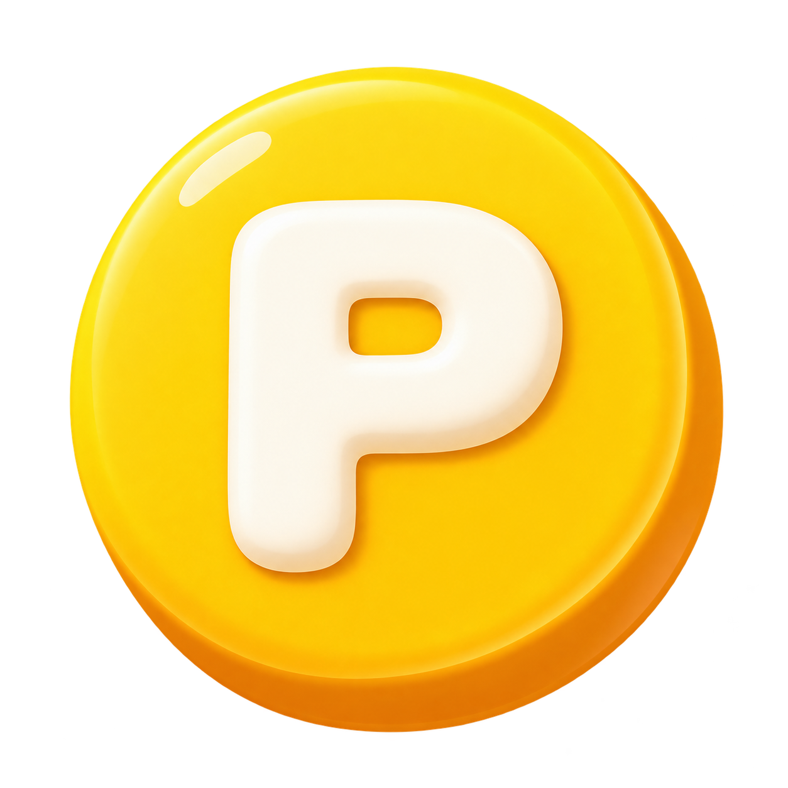

ゴールまでの残りを示す
実際の進捗と残り量を併記。目標勾配研究を参考に、次の行動がわかるかを確認します。

ぽちぽ（仮）デザインラボぷるんとジェリー版 ↗いつもの画面に、色と手ざわりを。
行動・進捗・受け取りがつながる
もうひとつのデザイン案です。
配置基準：現在のぽちぽ／タメルコ。
ヘッダー → カテゴリ → 特集 → ミッション → バナー・動画 → 固定フッター。
「受け取る」で、残高の更新と短い獲得演出を試せます。
見つかりませんでした。別の言葉で探してください。
参考資料では、進捗の提示と達成への反応を設計の軸にしています。
この配色や質感でドーパミンが増えると実証したものではありません。
実際の進捗と残り量を併記。目標勾配研究を参考に、次の行動がわかるかを確認します。
Duolingoの達成演出を参考に、日常の通知と節目のお祝いを分けます。
提供されたジェリー素材を使い、緑は行動、青は進捗、黄色は報酬に割り当てます。